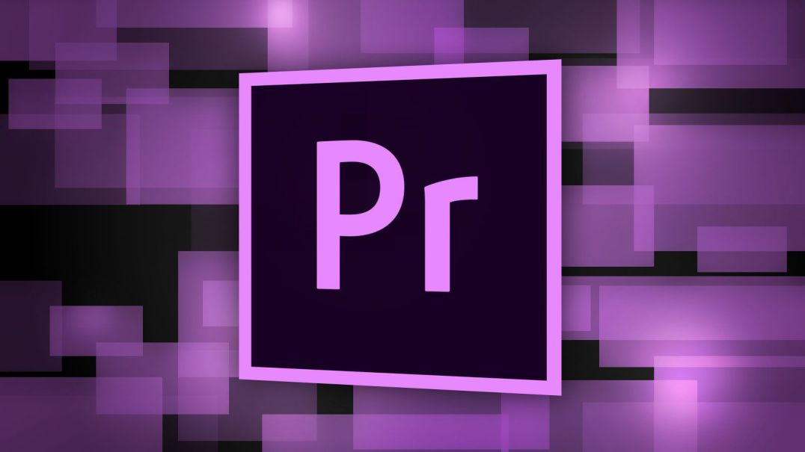
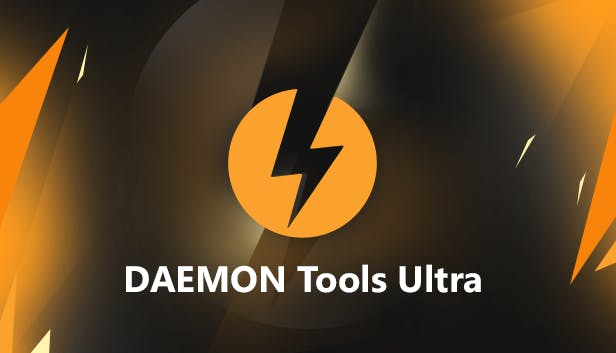
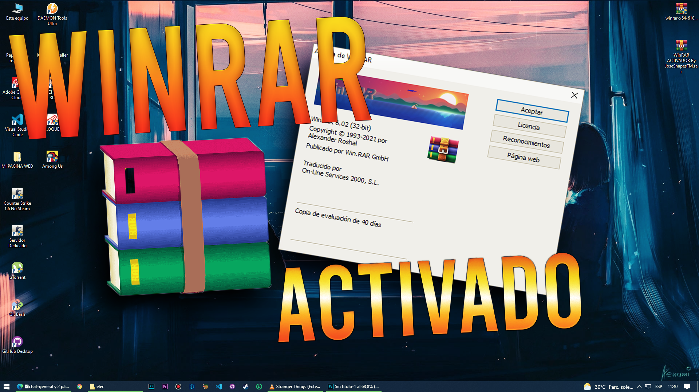
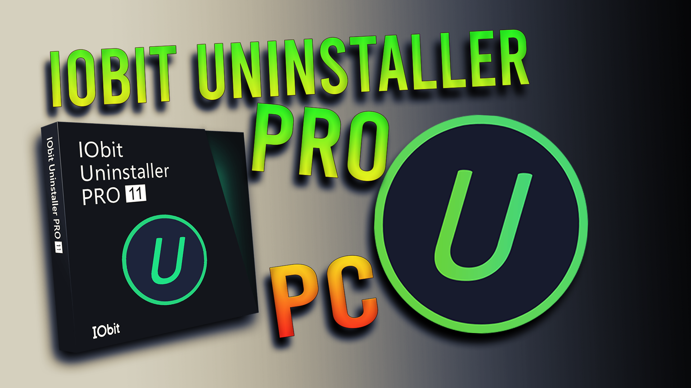
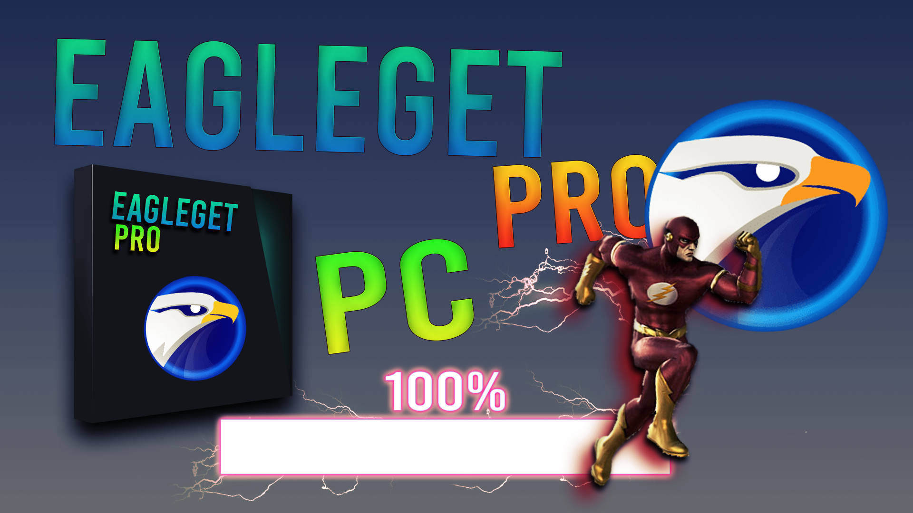

➤DRIVER EASY 5.7.1 FULL

Con DriverEasy podrás encontrar cualquier driver de una forma rápida y sencilla. Automáticamente detecta, descarga, guarda, restaura, instala y desinstala controladores de dispositivos. Puedes buscar y actualizar drivers de todo clase: audio, impresoras, modems, tarjetas de vídeo, escáneres, tarjetas PCI, ranuras USB, unidades CD/DVD ...

➤ADOBE PREMIERE PRO CC 2022 FULL
Adobe Premiere es un software de edición y posproducción de vídeo desarrollado por Adobe y orientado a la edición de vídeos profesionales. Cuenta con una interfaz que se puede personalizar, organizada en espacios de trabajo que coinciden con las etapas de la edición: ensamblaje, edición, color, efectos, audio y títulos.
OSEA MANO QUE VAS A EDITAR A LO MALANDRO :3
➤UTORRENT PRO FULL PARA PC

uTorrent Pro en su ultima versión fue diseñado para usar la menor cantidad posible de CPU, memoria y espacio, al tiempo que ofrece toda la funcionalidad esperada de los clientes avanzados. uTorrent se puede descargar archivos más rápido y contribuir compartiendo archivos y ancho de banda.
➤DAEMON TOOLS ULTRA FULL PARA PC
DAEMON Tools Ultra es una versión avanzada del clásico DAEMON Tools con funciones añadidas de la versión Pro y un diseño más intuitivo. Aquellos que usan esta herramienta a diario encontrarán una mayor facilidad de uso, mientras que los que la utilizan por primera vez podrán adaptarse a ella más rápidamente.
La mayor novedad de DAEMON Tools Ultra es la forma en la que se montan las imágenes; ahora solo tendremos que pinchar y arrastrar los ficheros para que se creen automáticamente. De esta manera, evitaremos tener que crear discos virtuales, algo que para muchos suponía una complicación añadida.
➤VOZ LOQUENDO PARA PC FULL
BUENO MIS PANAS AQUI LES TRAIGO ESTE GRANDIOSO PROGRAMA DE LA FAMOSA VOZ LOQUENDO,SE LOS TRAIGO COMPLETAMENTE FULL Y CRACKEADO ASI QUE DESCARGUENLO CON CONFIANZA Y EMPIECEN A EDITAR ESOS VIDEOS A LO EPICO :3
➤EMULADOR PCSX2 PARA PC FULL
BUENO MIS PANAS AQUI LES TRAIGO EL MEJOR EMULADOR DE PS2 PARA SUS PC Y DE BAJOS RECURSOS,SE LOS TRAIGO EN SU ULTIMA VERSION MAS LA BIOS FULL PARA QUE NO TENGAS NINGUN TIPO DE ERROR AL INICIAR EL JUEGO MI REY
➤PAGINA OFICIAL
➤WINRAR FULL PARA PC

WinRARes un software decompresión disponible en numerosos sistemas operativos. El programa WinRARproporciona la posibilidad decomprimir numerosos archivosen uno solo, haciendo así dos tareas al mismo tiempo.
➤INSTALADOR
➤IObit Uninstaller

IObit Uninstaller es una aplicación para Windows desarrollada por IObit Inc. Este software es una herramienta de desinstalación que extiende el método de desinstalación nativo de Windows. Puede desinstalar programas, barras de herramientas, algunas entradas de registro temporales y plugins de los navegadores.
➤EagleGe

EagleGet es un gestor de descargas que se integra en los principales navegadores: Mozilla Firefox, Opera, Internet Explorer y Google Chrome. El programa se presenta como una mejora respecto a los gestores por defecto de los navegadores ya que acelera las descargas con su tecnología multitarea.